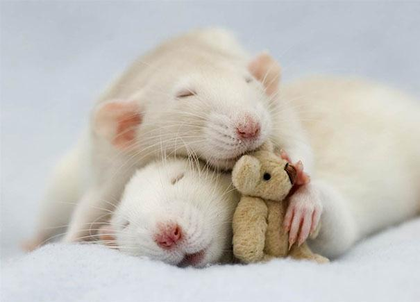

Lack of sleep could make you sick.
In one study, healthy subjects were immunized against the flu. The control group slept normally; the other group was sleep deprived (4 hrs/night for six nights).
Subjects were then tested to assess how strong the body's immune reaction was. 10 days later, the antibody response in the sleep-deprivation group was less than 50% of normal controls.
If you don't get enough sleep, your body is less effective at fending off illnesses!
Lack of sleep could make you seriously sick.
Your body contains natural killer cells that help with eliminating cancerous cells. One study showed that 4 hours of sleep reduction decreased the amount of natural killer cells in the body by 70%.
This means that following sleep deprivation, the body is less able to fend off cancerous cells... thus increasing the chances of getting cancer.
Lack of sleep could make you overweight.
Leptin and Ghrelin are the "hunger hormones" that regulate appetite.
- Leptin: Inhibits appetite
- Ghrelin: Increases appetite
Studies show that sleep loss decreases leptin and increases ghrelin, causing an increase in the subjective feeling of hunger and increasing cravings for carb-rich foods.
Lack of sleep could lead to global catastrophe. Don't be one of these people!
Chernobyl
April 1986: Sleep-deprived set operators neglected to turn on several safety features during a routine shutdown and test of reactors. This resulted in a reactor meltdown which caused 31 deaths shortly after the explosion. It is estimated that the radiation from the meltdown was 100 times more powerful than the atomic bombs dropped in World War II. Thousands more have died from the long-term effects of the radiation.
Exxon Valdez
March 1989: An oil tanker ran aground off Alaska, resulting in tremendous damage to the envinronment. What happened? The captain had turned over command to his first mate, who was sleep deprived. He had only slept 6 hours in the previous 3 days! This catastrophe led to the deaths of around 250,000-500,000 birds, 2,800-5,000 sea otters, and the destruction of billions of salmon eggs.
Is sleep necessary for life?
It probably wouldn't be right to test this on humans, but rats die after 15 days, on average, without sleep.
They die just as quickly following total starvation (meaning, sleep is as important as food!)

Image Source
What killed them?
Inability to control body temperature. The longer the rats were awake, the more food they ate. However, the more they ate, the more weight they lost.
Ultimately, the rats started to suffer from:
- Fluid in the lungs
- Ulcers in the stomach
- Sores on skin, paws, and tail
- Brain and spinal cord cell death
The final cause of death was catastrophic immune system failure leading to septicemia.
Given this evidence, it seems likely that sleep helps to regulate temperature, and hence, metabolism - things we can't live without!